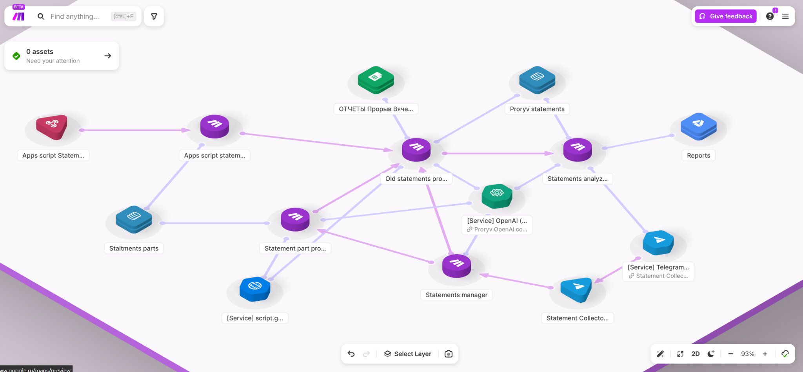
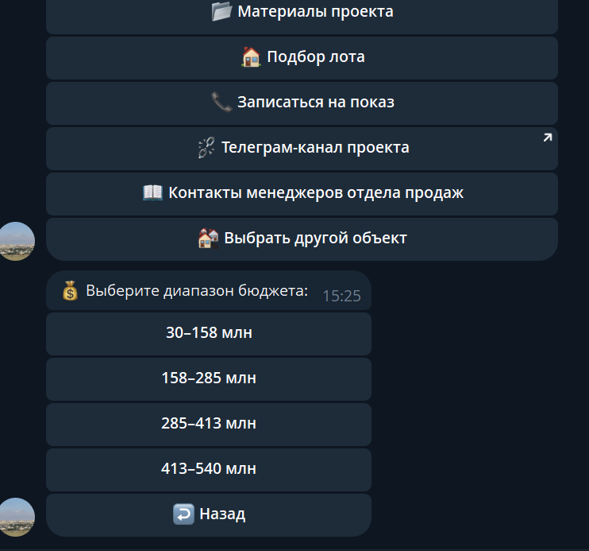
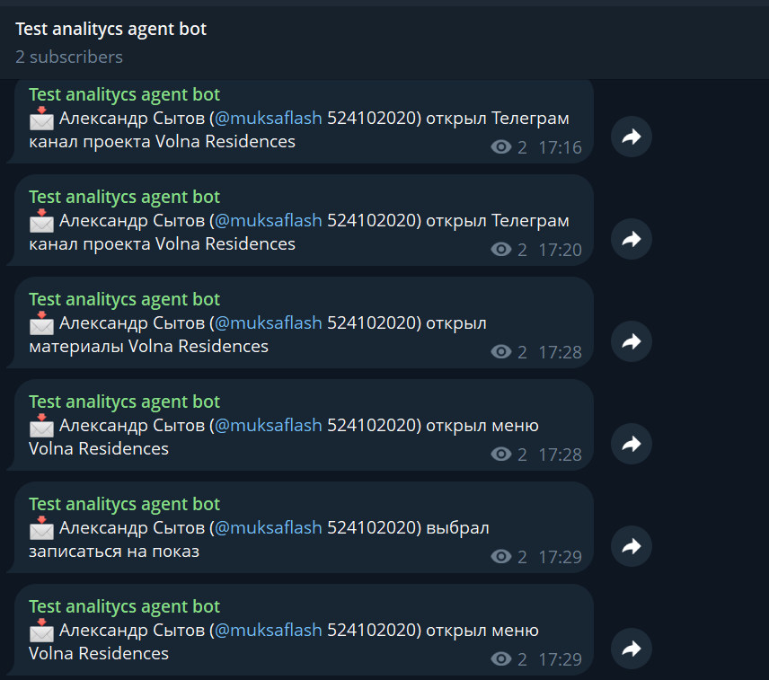
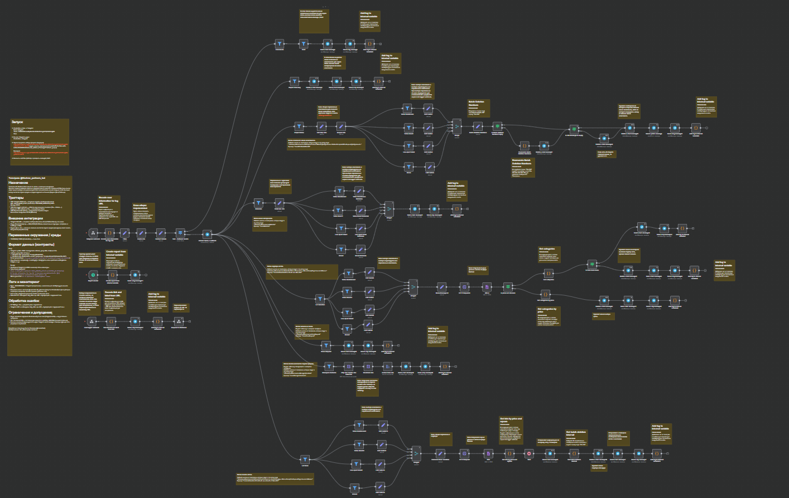
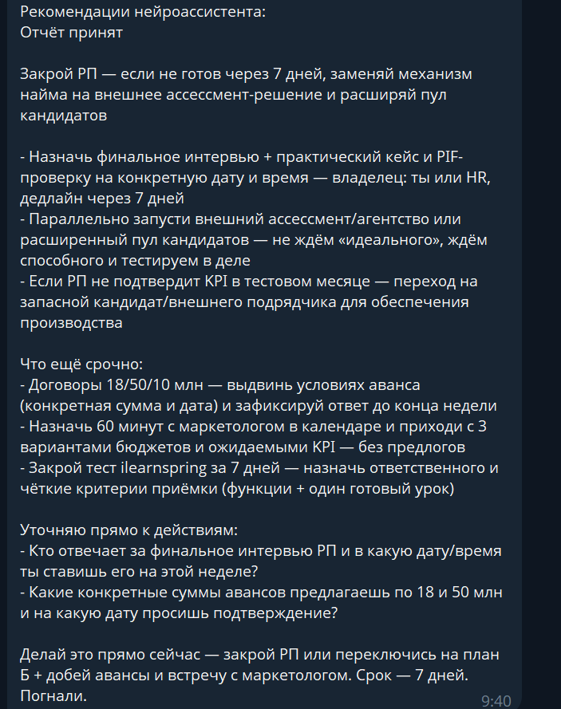
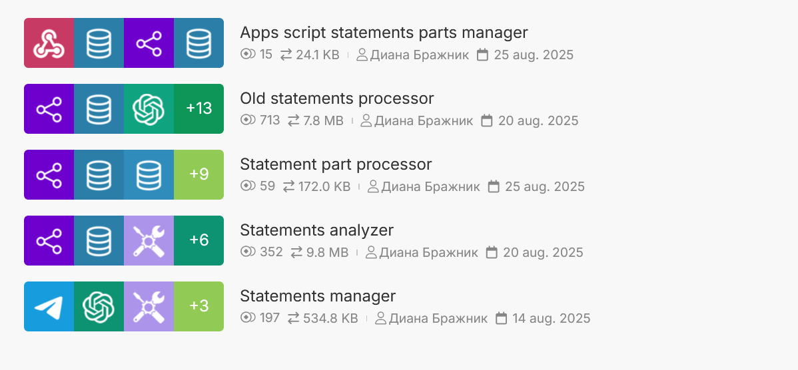
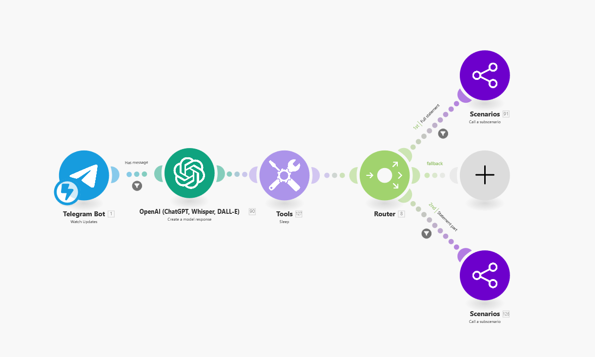

Business task
Help agents quickly find available lots, open project information, and move from Telegram to the correct project pages without manual searching.
Project Cases
These case studies are adapted from project notes and rewritten in English for a portfolio format. They focus on business context, architecture, and delivered value.

Nedvex / Real Estate
The bot is used by real estate agents selling units in Nedvex resort complexes. It gives agents fast access to project materials, lot selection, manager contacts, and navigation inside Telegram.
Help agents quickly find available lots, open project information, and move from Telegram to the correct project pages without manual searching.
Built on n8n and hosted on the client's server. The bot reads XML feeds from the customer's website, applies custom filtering and grouping logic, and uses workflow static data as a temporary storage layer.
User actions and link transitions are logged into a dedicated analytics chat. Daily activity reports are sent automatically so the team can see how agents use the bot.




Entrepreneur Club / AI
This Telegram bot supports a mentor in the Proryv entrepreneur club. It analyzes messages from club chats, answers weekly reports, declarations, and common questions, and produces structured recommendations.
Reduce repetitive mentor workload while keeping responses specific, direct, and based on the participant's latest report and declaration.
Built on Make.com with ChatGPT, Google Apps Script, Google Sheets, Telegram, and Make's internal database. Reports and declarations are duplicated to Google Sheets so past data can be reviewed and corrected.
The bot answers in chat with recommendations and sends the mentor a separate internal report with more detailed analysis of the participant's progress.



More Work